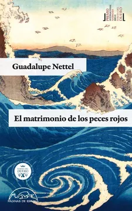

El matrimonio de los peces rojos
Guadalupe Nettel
De qué trata
En estas cinco narraciones intensas y de atmósfera delicada, Guadalupe Nettel nos propone un cruce de caminos entre el mundo animal y el universo humano para hablar de temas tan naturales como la ferocidad de la vida en pareja, la maternidad —cuando es deseada y cuando no lo es—, las crisis existenciales de la adolescencia o los lazos inimaginables que pueden establecerse entre dos enamorados.
Por qué dialoga con Latinoamérica hoy
La autora escribe este libro de cuentos donde utiliza a los animales para que sus personajes se vean reflejados en ellos. Actúan como un espejo de emociones, permitiendo que los protagonistas proyecten sus propias crisis, tensiones, y deseos reprimidos sin necesidad de expresarlos verbalmente. Los comportamientos de los animales funcionan como una analogía de las dinámicas de pareja, la maternidad o la soledad. Por ejemplo, en El matrimonio de los peces rojos, la hostilidad del confinamiento en la pecera simboliza el desgaste natural de una relación humana. La casa es comparada con una pecera donde la pareja está atrapada. La autora se pregunta, ¿qué instintos y ferocidades ocultamos tras el velo de la civilización? No son solo metáforas literarias, son catalizadores que también ayudan a cada lectora a descifrar la intimidad y la complejidad de las relaciones interpersonales.